01 Problem쇼핑 수요를 여행 일정으로 잇기 어렵다
부산 방문 수요와 여행 중 쇼핑 참여율은 높지만, 기간 한정 행사와 주변 관광지·맛집을 함께 찾고 동선을 짜려면 여러 정보를 확인해야 합니다.

모든 부산 쇼핑 정보는
부산드랍에서.
PROJECT OVERVIEW
부산 곳곳의 팝업스토어와 쇼핑 소식을 모아, 관심 있는 장소를 찾고 방문에 필요한 정보를 확인할 수 있도록 구성했습니다.
쇼핑에서 ‘드롭(DROP)’은 신제품이나 한정판을 사전 예고 없이 정해진 시간에 출시하는 방식을 뜻합니다. BUSAN DROP은 그 이름에 부산에서 한정된 기간에 열리는 팝업과 세일을 쉽게 찾을 수 있다는 의미를 담았습니다.


PROBLEM & SOLUTION
단위: 명 · 점선으로 이어진 2026년 값은 1–9월 누계
2025년 전국 조사 · 표본 16,110명 · 복수응답
85% 증가 · 기준 매출을 100으로 환산 · 비교 기간 미기재
기획서 그래프의 집계 구간 · 신고 유형명 미기재
자료 · BUSAN DROP 기획 배경, 부산관광통계·부산관광공사, 2025 외래관광객조사 표 39
부산 방문 수요와 여행 중 쇼핑 참여율은 높지만, 기간 한정 행사와 주변 관광지·맛집을 함께 찾고 동선을 짜려면 여러 정보를 확인해야 합니다.
외국인 관광객이 구매를 결정하려면 가격과 혜택, 적용 조건은 물론 교환·환불 기준까지 쉽게 이해할 수 있어야 합니다.
홈과 매장 찾기에서 지역·카테고리별 행사를 탐색하고, 드롭 플랜에서 방문 일정에 맞춰 행사장과 주변 관광지·맛집을 함께 선택할 수 있게 했습니다.
행사 상세에 장소와 운영 시간, 가격·혜택과 적용 조건을 모았습니다. 교환·환불처럼 방문 전 확인이 필요한 사항은 해외 방문객 안내에서 쉽게 찾을 수 있도록 설계했습니다.
COMPETITIVE ANALYSIS
관광 혜택, 여행 계획, 팝업 탐색을 대표하는 세 서비스를 비교했습니다.
관광 혜택
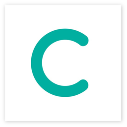
여행 계획
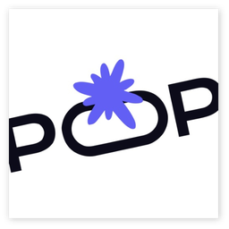
팝업 탐색
핵심 과제 행사장을 중심으로 주변 여행을 하나로 연결하는
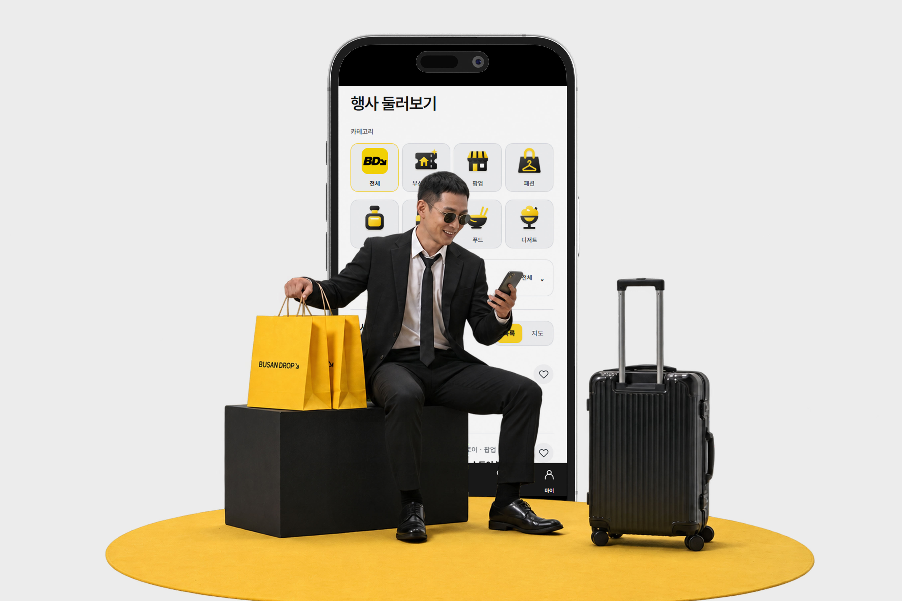


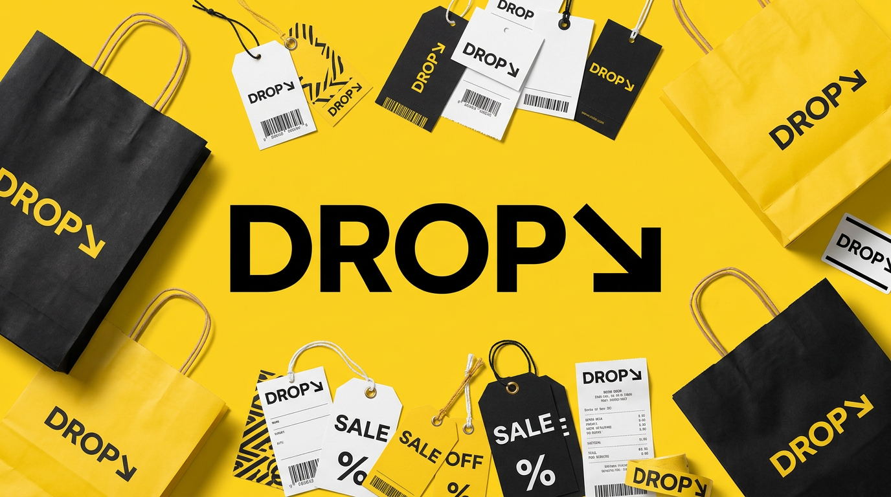
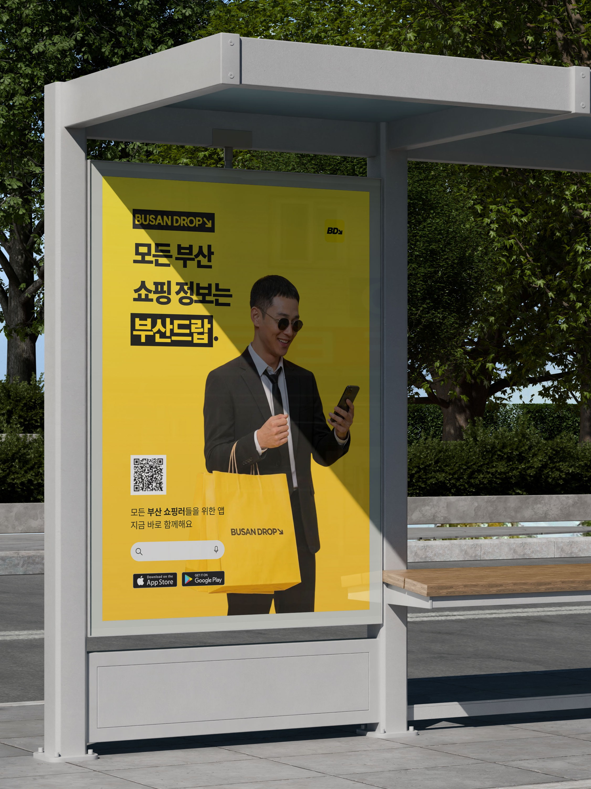
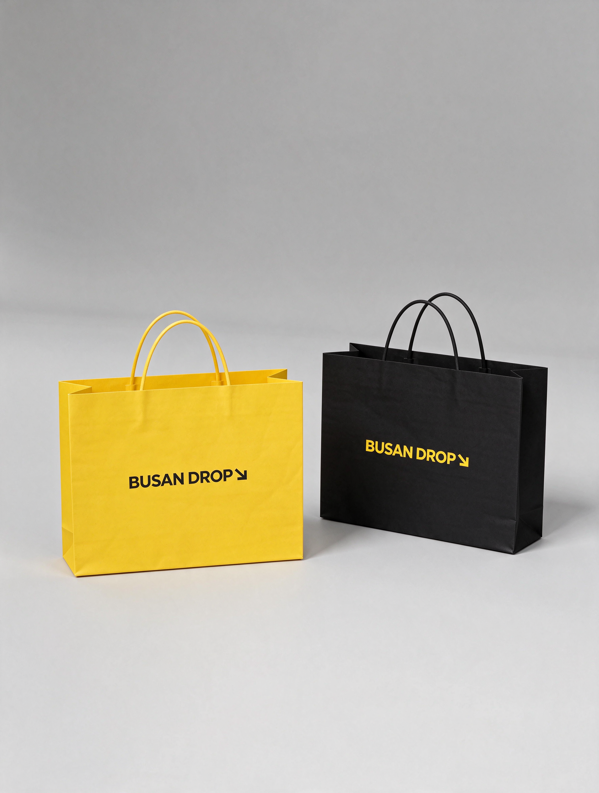
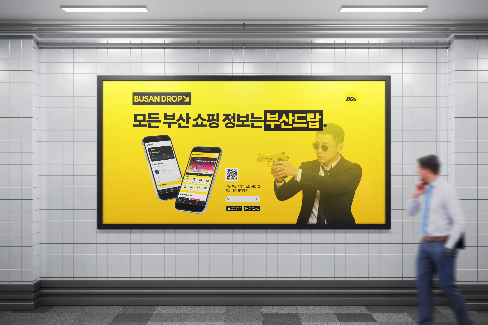
DESIGN PROCESS
쇼핑 소식과 방문 정보를 구분합니다.
홈에서 관심 있는 소식으로 이동하는 경로를 잡습니다.
목록과 상세 화면에 필요한 정보를 배치합니다.
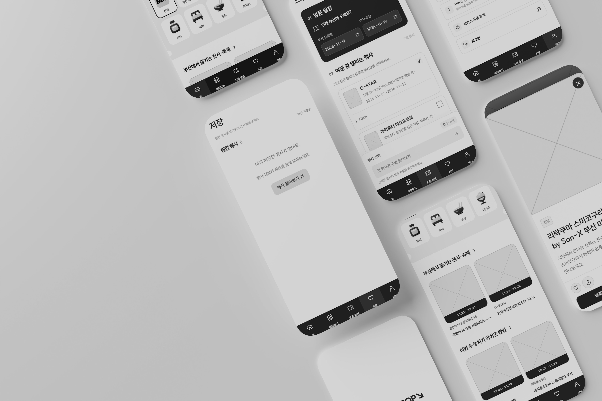
INFORMATION ARCHITECTURE
좌우로 밀거나 드래그해 전체 구조를 볼 수 있어요.
VISUAL DESIGN
#FFD628주요 버튼과 핵심 정보에 시선을 모으는 브랜드 강조색입니다.
#171717#626870#F5F6F7#FFFFFFSUIT
MOBILE SCREENS
부산의 쇼핑 소식을 한 화면에서 둘러봅니다.

추천과 직접 탐색의 역할을 나눴어요. 홈은 테마별 추천과 아이콘 카테고리를 앞세워 관심 있는 쇼핑 소식을 빠르게 둘러볼 수 있게 했어요.
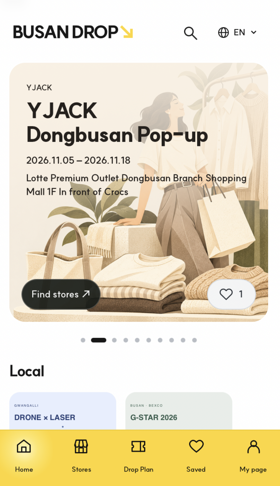
카테고리와 지역으로 행사를 찾고 목록이나 지도에서 확인합니다.
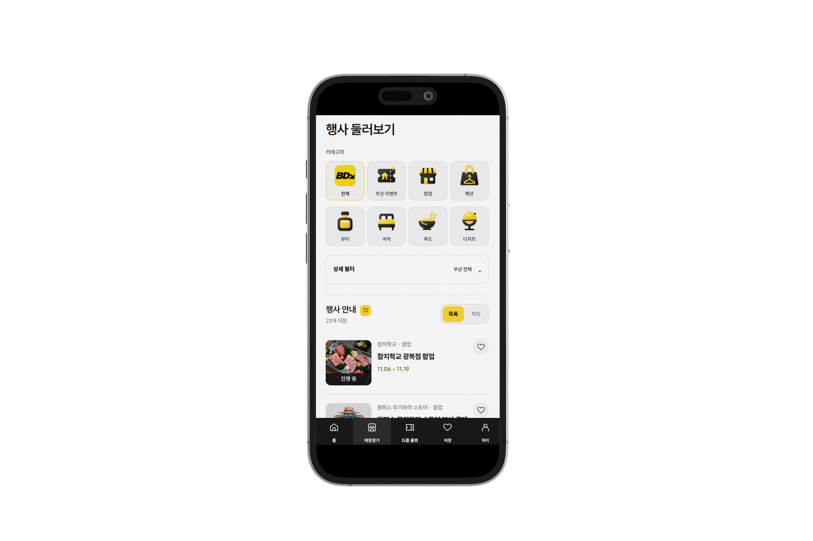
텍스트 필터가 한 화면에 몰려 있었어요. 카테고리는 아이콘으로 구분하고 상세 필터는 따로 배치해, 조건을 좁히면서 행사명과 기간을 쉽게 비교할 수 있게 했어요.
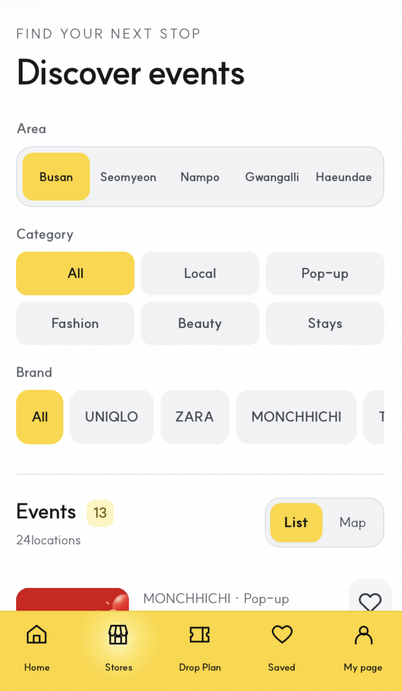
부산 방문 날짜를 정하고 여행 중 들를 행사를 선택합니다.

일정 입력이 어디까지 진행됐는지 파악하기 어려웠어요. 방문 일정과 행사 선택에 단계 번호를 붙이고 상세 정보는 필요할 때 펼치도록 해, 현재 단계와 다음 행동이 보이게 했어요.
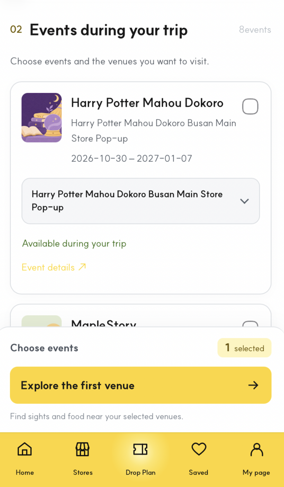
찜한 행사를 다시 보거나 저장한 행사로 드롭 플랜을 시작합니다.

큰 카드 이미지 때문에 한 화면에 보이는 찜 항목이 적었어요. 이미지 높이와 카드 여백을 줄여 더 적은 스크롤로 저장한 행사를 훑어볼 수 있게 했어요.
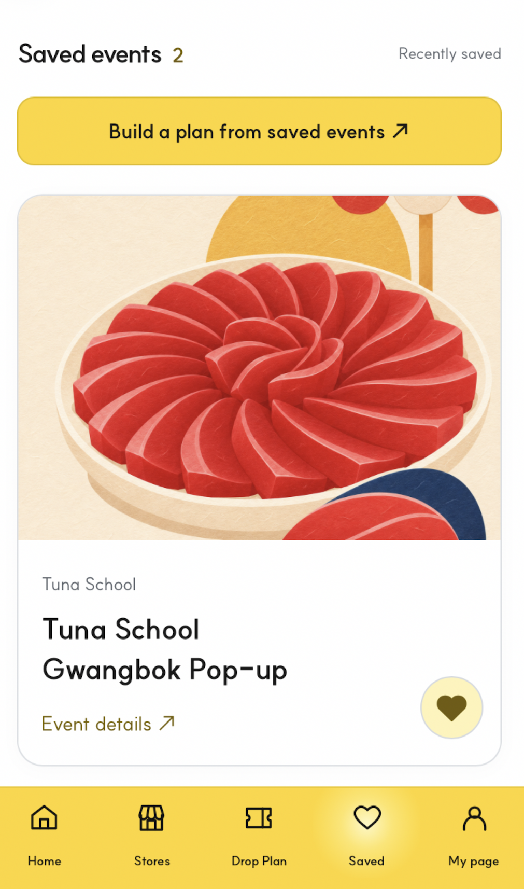
만들어 둔 드롭 플랜을 확인하고 여행 일정을 관리합니다.

플랜이 여러 개 쌓이면 구분하기 어려웠어요. 이름·기간·구성 정보를 목록에 정리하고 이름 편집을 추가해, 원하는 일정을 쉽게 찾아 관리할 수 있게 했어요.
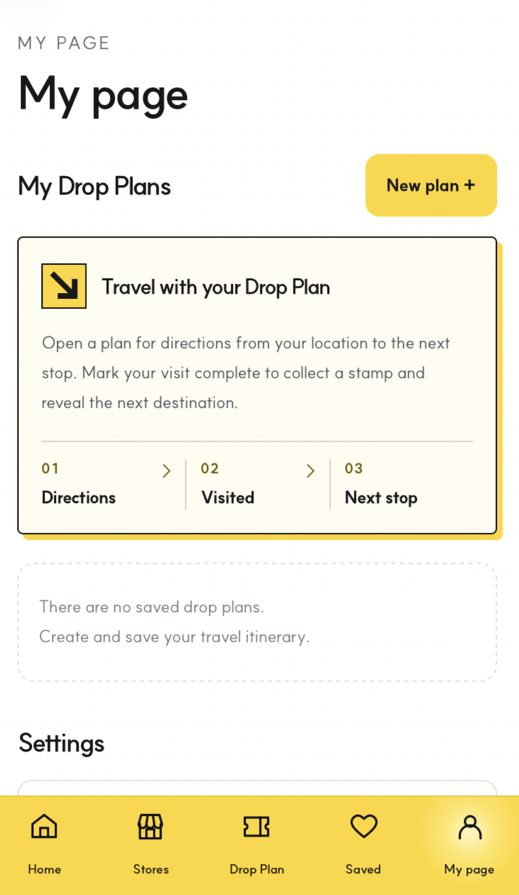
USER PERSONA
팝업 안내를 번역해도 날짜와 지점, 혜택을 따로 확인해야 한다.
행사 정보를 중국어 번체로 보고 주변 맛집도 저장하고 싶다.
친구와 팝업을 중심으로 식사와 관광 동선을 미리 짜고 싶다.
여행 날짜에 맞는 팝업을 찾고, 저장한 맛집까지 들르면 즐겁다.
“행사 안내는 중국어 번체로 보는 게 더 편해요. 부산에 있는 날 팝업이 열리는지, 어느 매장으로 가야 하는지 미리 확인하고 근처 맛집도 일정에 넣고 싶어요.”
USER PERSONA
행사 일정과 장소를 다시 찾아보고, 흩어진 저장 목록으로 동선을 짜기 어렵다.
날짜와 지역으로 행사를 찾고, 운영시간과 혜택을 한눈에 확인하고 싶다.
놓치고 싶지 않은 팝업을 중심으로 주말 코스를 미리 짜고 싶다.
가보고 싶던 맛집을 코스에 넣고, 방문 스탬프를 하나씩 모을 때 즐겁다.
“이번 주말에 갈 수 있는 팝업을 찾고, 근처에서 밥 먹고 둘러볼 곳까지 한 번에 정하고 싶어요.”
CAMPAIGN VISUALS
좌우로 밀어 다음 영상을 확인하세요.
국내 여행객을 위한 캠페인
첩보물의 반전 유머로 ‘DROP’의 두 가지 의미를 전했습니다.
가격은 내려가고 여행과 쇼핑의 부담은 가벼워집니다.
국내 여행객을 위한 캠페인
암행어사가 마패 대신 할인 영수증을 내미는 퓨전 사극입니다.
국악에서 첩보 음악으로 전환하고 부산 사투리로 반전을 살렸습니다.
김다빈 기획 · 최영서 인물·전개 각색 및 제작
중국인 여행객에게 로맨스 판타지 이야기로 부산드랍을 소개하는 중국어 캠페인입니다.
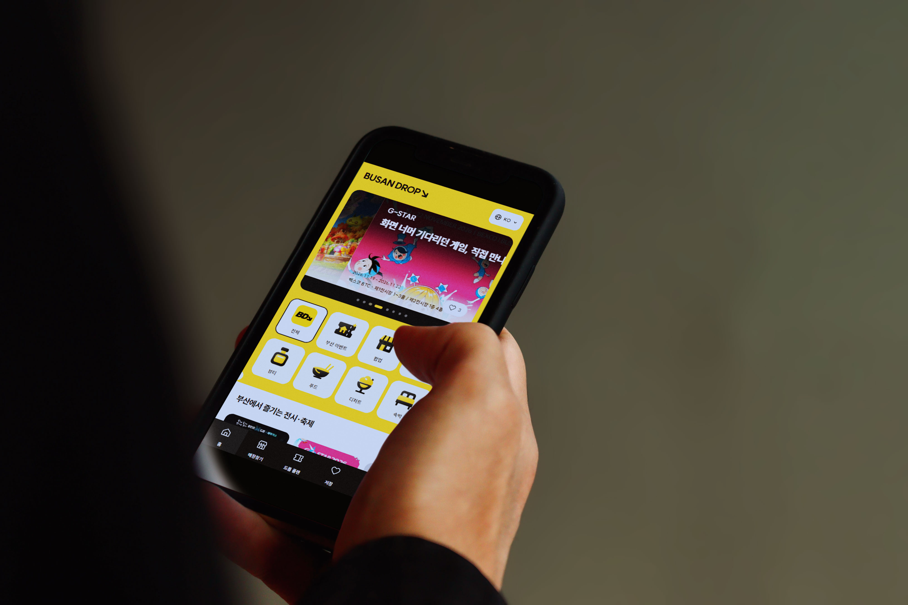
부산 쇼핑 정보 모음 앱